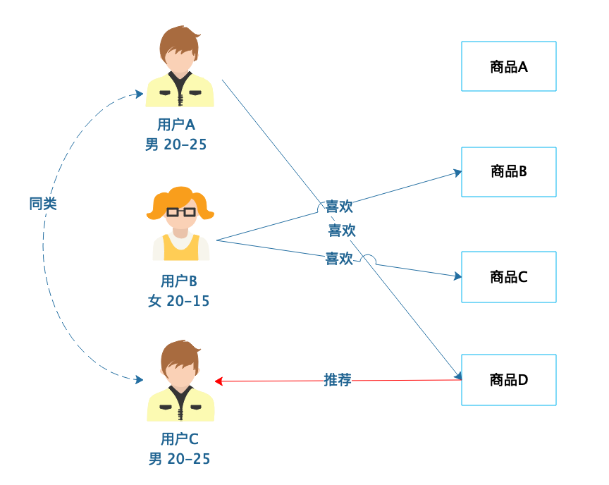
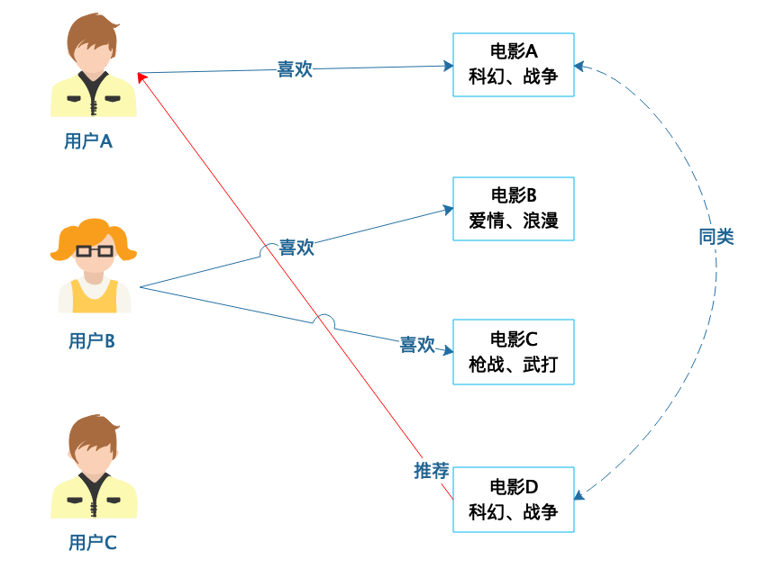
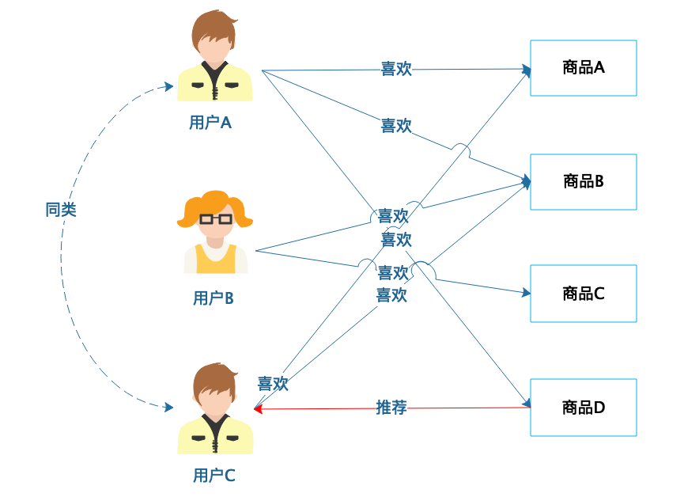
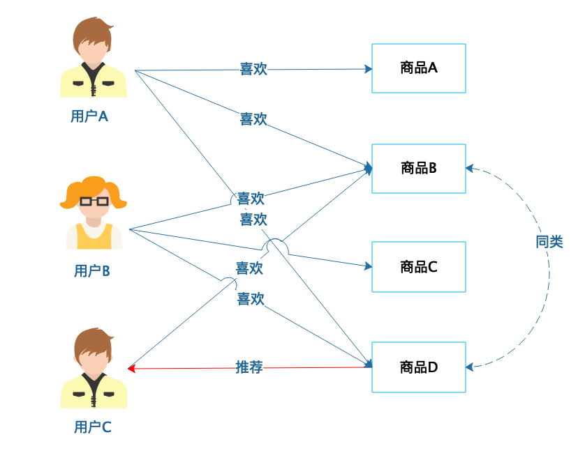

- 00 开篇词 为什么说每个软件工程师都应该懂大数据技术？.md.html
- 01 大数据技术发展史：大数据的前世今生.md.html
- 02 大数据应用发展史：从搜索引擎到人工智能.md.html
- 03 大数据应用领域：数据驱动一切.md.html
- 04 移动计算比移动数据更划算.md.html
- 05 从RAID看垂直伸缩到水平伸缩的演化.md.html
- 06 新技术层出不穷，HDFS依然是存储的王者.md.html
- 07 为什么说MapReduce既是编程模型又是计算框架？.md.html
- 08 MapReduce如何让数据完成一次旅行？.md.html
- 09 为什么我们管Yarn叫作资源调度框架？.md.html
- 10 模块答疑：我们能从Hadoop学到什么？.md.html
- 11 Hive是如何让MapReduce实现SQL操作的？.md.html
- 12 我们并没有觉得MapReduce速度慢，直到Spark出现.md.html
- 13 同样的本质，为何Spark可以更高效？.md.html
- 14 BigTable的开源实现：HBase.md.html
- 15 流式计算的代表：Storm、Flink、Spark Streaming.md.html
- 16 ZooKeeper是如何保证数据一致性的？.md.html
- 17 模块答疑：这么多技术，到底都能用在什么场景里？.md.html
- 18 如何自己开发一个大数据SQL引擎？.md.html
- 19 Spark的性能优化案例分析（上）.md.html
- 20 Spark的性能优化案例分析（下）.md.html
- 21 从阿里内部产品看海量数据处理系统的设计（上）：Doris的立项.md.html
- 22 从阿里内部产品看海量数据处理系统的设计（下）：架构与创新.md.html
- 23 大数据基准测试可以带来什么好处？.md.html
- 24 从大数据性能测试工具Dew看如何快速开发大数据系统.md.html
- 25 模块答疑：我能从大厂的大数据开发实践中学到什么？.md.html
- 26 互联网产品 + 大数据产品 = 大数据平台.md.html
- 27 大数据从哪里来？.md.html
- 28 知名大厂如何搭建大数据平台？.md.html
- 29 盘点可供中小企业参考的商业大数据平台.md.html
- 30 当大数据遇上物联网.md.html
- 31 模块答疑：为什么大数据平台至关重要？.md.html
- 32 互联网运营数据指标与可视化监控.md.html
- 33 一个电商网站订单下降的数据分析案例.md.html
- 34 A_B测试与灰度发布必知必会.md.html
- 35 如何利用大数据成为“增长黑客”？.md.html
- 36 模块答疑：为什么说数据驱动运营？.md.html
- 37 如何对数据进行分类和预测？.md.html
- 38 如何发掘数据之间的关系？.md.html
- 39 如何预测用户的喜好？.md.html
- 40 机器学习的数学原理是什么？.md.html
- 41 从感知机到神经网络算法.md.html
- 42 模块答疑：软件工程师如何进入人工智能领域？.md.html
- 所有的不确定都是机会——智慧写给你的新年寄语.md.html
- 第2季回归丨大数据之后，让我们回归后端.md.html
- 结束语 未来的你，有无限可能.md.html
- 捐赠
39 如何预测用户的喜好？
在用户对自己需求相对明确的时候，可以用搜索引擎通过关键字搜索很方便地找到自己需要的信息。但有些时候，搜索引擎并不能完全满足用户对信息发现的需求。一方面，用户有时候其实对自己的需求并不明确，期望系统能主动推荐一些自己感兴趣的内容或商品；另一方面，企业也希望能够通过更多渠道向用户推荐信息和商品，在改善用户体验的同时，提高成交转化率，获得更多营收。而这中间发现用户兴趣和喜好的就是推荐引擎。
在豆瓣中打开电影《肖申克的救赎》的页面，你会发现这个页面还会推荐一些其他电影。如果你喜欢《肖申克的救赎》，那么有很大概率你也会喜欢下面这些电影，这就是推荐引擎发挥的作用。
推荐引擎的思想其实很早就存在了，后来随着大数据技术的发展，推荐引擎的普及程度和重要性也越来越高，淘宝曾经就主推“千人千面”，要让每个用户打开的淘宝都不一样，背后的核心技术就是推荐引擎。现在稍有规模的互联网应用几乎都有推荐功能，而一些新兴崛起的互联网产品，推荐功能甚至是其核心产品特点与竞争优势，比如今日头条，就是靠智能推荐颠覆了互联网新闻资讯领域。
那么推荐引擎如何预测用户的喜好，进行正确的推荐呢？主要就是依靠各种推荐算法，常用的推荐算法有：基于人口统计的推荐、基于商品属性的推荐、基于用户的协同过滤推荐、基于商品的协同过滤推荐。
基于人口统计的推荐
基于人口统计的推荐是相对比较简单的一种推荐算法，根据用户的基本信息进行分类，然后将商品推荐给同类用户。

从图中可以看到，用户A和用户C有相近的人口统计信息，划分为同类，那么用户A喜欢（购买过）的商品D就可以推荐给用户C。基于人口统计的推荐比较简单，只要有用户的基本信息就可以进行分类，新注册的用户总可以分类到某一类别，那么立即就可以对他进行推荐，没有所谓的“冷启动”问题，也就是不会因为不知道用户的历史行为数据而不知道该如何向用户推荐。
而且这种推荐算法也不依赖商品的数据，和要推荐的领域无关，不管是服装还是美食，不管是电影还是旅游目的地，都可以进行推荐，甚至可以混杂在一起进行推荐。
当然也正因为这种推荐算法比较简单，对于稍微精细一点的场景，推荐效果就比较差了。因此，在人口统计信息的基础上，根据用户浏览、购买信息和其他相关信息，进一步细化用户的分类信息，给用户贴上更多的标签，比如家庭成员、婚姻状况、居住地、学历、专业、工作等，即所谓的用户画像，根据用户画像进行更精细的推荐，并进一步把用户喜好当做标签完善用户画像，再利用更完善的用户画像进行推荐，如此不断迭代优化用户画像和推荐质量。
基于商品属性的推荐
前面一个算法是基于用户的属性进行分类，然后根据同类用户的行为进行推荐。而基于商品属性的推荐则是将商品的属性进行分类，然后根据用户的历史行为进行推荐。

从图中可以看到，电影A和电影D有相似的属性，被划分为同类商品，如果用户A喜欢电影A，那么就可以向用户A推荐电影D，比如给喜欢《星球大战》的用户推荐《星际迷航》。一般来说，相对于基于人口统计的推荐，基于商品属性的推荐会更符合用户的口味，推荐效果相对更好一点。
但是基于商品属性的推荐需要对商品属性进行全面的分析和建模，难度相对也更大一点，在实践中，一种简单的做法是提取商品描述的关键词和商品的标签作为商品的属性。此外，基于商品属性的推荐依赖用户的历史行为数据，如果是新用户进来，没有历史数据，就没有办法进行推荐了，即存在“冷启动”问题。
基于用户的协同过滤推荐
基于用户的协同过滤推荐是根据用户的喜好进行用户分类，常用的就是我前面讲过的KNN算法，寻找和当前用户喜好最相近的K个用户，然后根据这些用户的喜好为当前用户进行推荐。

从图中可以看到，用户A喜欢商品A、商品B和商品D，用户C喜欢商品A和商品B，那么用户A和用户C就有相似的喜好，可以归为一类，然后将用户A喜欢的商品D推荐给用户C。
基于用户的协同过滤推荐和基于人口统计的推荐都是将用户分类后，根据同类用户的喜好为当前用户进行推荐。不同的是，基于人口统计的推荐仅仅根据用户的个人信息进行分类，分类的粒度比较大，准确性也较差；而基于用户的协同过滤推荐则根据用户历史喜好进行分类，能够更准确地反映用户的喜好类别，推荐效果也更好一点。今天文章开头举的推荐电影的例子，就是基于用户的协同过滤进行推荐。
基于商品的协同过滤推荐
基于商品的协同过滤推荐是根据用户的喜好对商品进行分类，如果两个商品，喜欢它们的用户具有较高的重叠性，就认为它们的距离相近，划分为同类商品，然后进行推荐。

从图中可以看到，用户A喜欢商品A、商品B和商品D，用户B喜欢商品B、商品C和商品D，那么商品B和商品D的距离最近，划分为同类商品；而用户C喜欢商品B，那么就可以为其推荐商品D。商品的分类相对用户的分类更为稳定，通常情况下，商品的数目也少于用户的数目，因此使用基于商品的协同过滤推荐，计算量和复杂度小于基于用户的协同过滤推荐。
小结
除了上面这些推荐算法，还有基于模型的推荐，根据用户和商品数据，训练数学模型，然后进行推荐。前面我们讨论过的关联分析，也可以进行推荐。在实践中，通常会混合应用多种算法进行推荐，特别是大型电商网站，推荐效果每进步一点，都可能会带来巨大的营收转化，如果你经常在网上购物，肯定也能感受电商网站这些年在推荐方面的巨大进步。
互联网发展到现在，历史上那种用户主动搜索，然后选择信息的产品模式几乎已经走到尽头。用户无需做任何操作，打开产品就能立即看到自己想看的信息，正成为新的产品模式，而最近几年快速崛起的互联网产品，也都有这样的特性。今日头条根据你点击的新闻，预测你的关注偏好，不断推荐你感兴趣的内容，让你一打开App，看到的几乎都是你感兴趣的内容。抖音、快手这些产品也是如此，通过不断计算、分析用户喜好，从而优化推荐的结果。某些社交产品甚至将人作为商品进行推荐，不断推荐你可能喜欢的人，遇到喜欢的人向左滑动，不喜欢的向右滑动，然后根据你的喜好进一步优化推荐。
在未来，随着用户对推荐功能接受程度的不断提高，推荐算法的不断改进，以及包括自然语言处理在内的各种AI技术的进步，系统主动推荐会逐渐成为主要的用户交互方式。也许在不久的将来，你不需要再打开各种App看新闻、点外卖、刷微博、逛淘宝，你的手机就已经非常了解你，它会主动推荐你该看点什么、吃点什么、买点什么、玩点什么。未来的生活可能不是你唤醒你的手机，而是你的手机唤醒你。
思考题
你在使用互联网产品过程中，发现使用推荐算法的功能有哪些？可能使用了哪些推荐算法？
欢迎你点击“请朋友读”，把今天的文章分享给好友。也欢迎你写下自己的思考或疑问，与我和其他同学一起讨论。
© 2019 - 2023 Liangliang Lee. Powered by gin and hexo-theme-book.